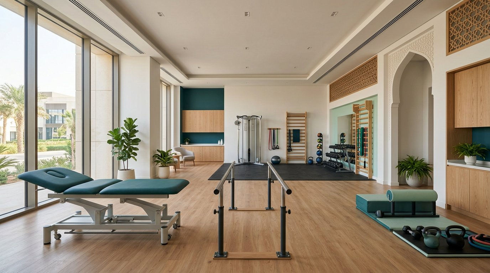
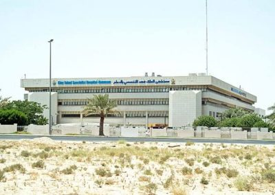

02
خدمات تخصصية
الدوخة والتوازن
تقييم وتأهيل دهليزي فردي للدوخة واضطرابات التوازن، يشمل الحالات الموضعية وتراجع التوازن لدى كبار السن، مع برنامج منزلي منظّم.
ناقش الحالة ←أخصائي أول · رئيس قسم التأهيل · CMPT
أقود تطوير خدمات التأهيل، وأحوّل الخبرة السريرية إلى مسارات عمل قابلة للقياس، وأبني حلول ذكاء اصطناعي تدعم قرار الممارس الصحي — ولا تستبدله.
مساران واضحان لخدمة احتياجك
الرؤية المهنية
أعمل عند نقطة التقاء الممارسة السريرية، وقيادة العمليات، والتعليم، والتقنية الصحية.
من قيادة العلاج الطبيعي والوظيفي وعلاج النطق، إلى تطوير عيادات تخصصية وأدوات رقمية؛ هدفي هو جعل رحلة التأهيل أوضح للمريض، وأكثر قابلية للقياس للممارس، وأعلى كفاءة للمنشأة.
الإنسان أولاً
التقنية تخدم العلاقة العلاجية ولا تختزلها.
القياس قبل الانطباع
اختبار، تدخل موجّه، ثم إعادة الاختبار.
الحوكمة بالتصميم
خصوصية وموافقة بشرية في القرارات المؤثرة.

بيئة العمل التي أؤمن بها
التأهيل المتميز ليس أجهزة فقط؛ بل بيئة منظمة، ومسار واضح، وفريق متكامل، وقرار سريري يتطور مع استجابة المستفيد.
مجالات يمكنني أن أضيف فيها قيمة
خدمات سريرية وتطويرية مبنية على الخبرة الموثقة. نطاق كل خدمة وآلية إتاحتها يُحددان بعد التواصل والتقييم الأولي.
تحويل الحاجة إلى مسار خدمة عملي: تصميم رحلة المستفيد، تحديد نقاط القياس، بناء الإجراءات، رفع كفاءة التدفق، ودعم جاهزية الجودة والاعتماد.
تقييم وتأهيل دهليزي فردي للدوخة واضطرابات التوازن، يشمل الحالات الموضعية وتراجع التوازن لدى كبار السن، مع برنامج منزلي منظّم.
ناقش الحالة ←تقييم ميكانيكا القدم والمشي ومسار قياس الفرشات المخصصة للحالات ذات الصلة بألم القدم أو الركبة أو أسفل الظهر.
استفسر عن الخدمة ←تقييم وظيفي للحالات التي لم تستجب للرعاية المعتادة، عبر تحليل الحركة والأداء العضلي والعوامل العصبية العضلية، ثم إعادة الاختبار.
اعرف المنهجية ←إدارة متكاملة للوذمة اللمفية، إلى جانب تقييم وتأهيل خلل قاع الحوض والألم المزمن، ضمن تعامل سريري يحفظ الخصوصية.
ناقش الاحتياج ←مسارات تأهيل منزلية لكبار السن، وما بعد الجراحة، ومحدودي الحركة؛ مع متابعة منظمة وبرنامج تمارين مناسب للبيئة المنزلية.
استفسر عن الترتيبات ←ورش CME، وإرشاد سريري، وتدريب مدربين، وبرامج تقييم وإدارة إصابات للشركات والأندية الرياضية والفرق الصناعية.
صمّم برنامجاً ←المعلومات هنا تعريفية وليست تشخيصاً أو خطة علاج. الخدمة المناسبة تعتمد على التقييم السريري، وقد تتطلب إحالة أو موافقات بحسب الحالة والجهة.
ما الذي يصنع الفرق؟
استناداً إلى مراجعة نماذج التأهيل الرائدة محلياً وعالمياً، بُني هذا العرض حول ما يهم المستفيد فعلاً: وضوح المسار، تخصص الخدمة، قياس التقدم، وسهولة التواصل.
خبرة عملية في رعاية الحالات وفي قيادة فرق العلاج الطبيعي والوظيفي وعلاج النطق.
مسارات واضحة للدوخة والتوازن، القدم والمشي، الحالات المعقدة، والوذمة اللمفية.
هدف وظيفي محدد، اختبار مناسب، تدخل موجه، ثم إعادة قياس الاستجابة.
بيانات منظمة وذكاء اصطناعي لدعم القرار، مع الخصوصية والإشراف البشري.
منهجية العمل السريري
موقع الألم ليس دائماً مصدر المشكلة. لذلك تبدأ الخطة بالحركة المهمة للمستفيد وتنتهي بإعادة قياسها.
تحدث عن حالة أو مشروع ←تحديد الحركة المختلة أو المهمة الوظيفية ذات المعنى للمستفيد.
اختبارات سريرية تضيق الاحتمالات وتفصل النتائج عن الافتراضات.
صياغة عامل مساهم محتمل والتحقق منه سريرياً حيثما أمكن.
اختيار تدخل محدد يخدم الفرضية بدلاً من خطة عامة غير موجهة.
تكرار الاختبار نفسه، توثيق الاستجابة، وتعديل القرار بناءً على النتيجة.
الابتكار والذكاء الاصطناعي
مشاريع تربط المنطق السريري بالبيانات المنظمة والأتمتة المسؤولة، مع إبقاء الممارس مسؤولاً عن القرار النهائي.
PROJECT 01
نظام دعم قرار سريري ينظّم معلومات ما قبل الزيارة، وتقييم الحالة، ومنطق الاختبار وإعادة الاختبار، والمتابعة؛ بهدف تجهيز المعالج بمعلومة أوضح لا إصدار تشخيص مستقل.
نظام تشغيل شخصي يعمل كرئيس مكتب رقمي: أولويات، موافقات، تنفيذ، تدقيق ومتابعة — بواجهة مهيأة للجوال.
قيد التطوير ↗إطار متطور للتقييم الحركي والعلاج اليدوي، يربط الخلل الوظيفي بالاختبار والتدخل الدقيق وإعادة القياس.
إطار سريري متطور ↗قواعد بيانات تفاعلية وسير عمل رقمي لدعم الكفاءة الإدارية وتتبع رحلة المستفيد.
ابتكار تشغيلي ↗المسيرة المهنية
بكالوريوس علاج طبيعي
Certified Mulligan Practitioner
Certified International Trainer
Complete Lymphedema Certification
رئيس قسم التأهيل · الجبيل
قيادة عمليات العلاج الطبيعي والعلاج الوظيفي وعلاج النطق، وتطوير خدمات تخصصية ومبادرات جودة وأدوات رقمية.
أخصائي علاج طبيعي أول ومنسق تعليم · الدمام
ممارسة متقدمة وتطوير مهارات أكثر من 15 ممارساً وتقديم ورش تعليم طبي مستمر إقليمية.
أخصائي علاج طبيعي · الظهران
تأهيل حالات العظام والكسور وآلام الظهر والحالات العصبية.
أخصائي علاج طبيعي ومنسق امتياز · مكة
دعم التأهيل القلبي وتطوير المتدربين والمشاركة في لجنة التعليم المركزية.
محطات صنعت الخبرة
مسيرة عبر بيئات صحية متنوعة: من الممارسة السريرية والتنسيق التعليمي إلى قيادة خدمات تأهيل متعددة التخصصات.
الجبيل · قيادة قسم التأهيل

الدمام · ممارسة متقدمة وتعليم سريري
تأهيل العظام والكسور والحالات العصبية
التأهيل القلبي وتنسيق التدريب
صور المنشآت العامة: Wikimedia Commons ومصادر تعريفية عامة. ستُستبدل بصور مهنية يملكها صاحب الموقع عند رفعها.
هل لديك تحدٍ يستحق حلاً أفضل؟
للتعاون المهني، أو تطوير خدمات التأهيل، أو التدريب، أو الابتكار في الذكاء الاصطناعي الصحي.